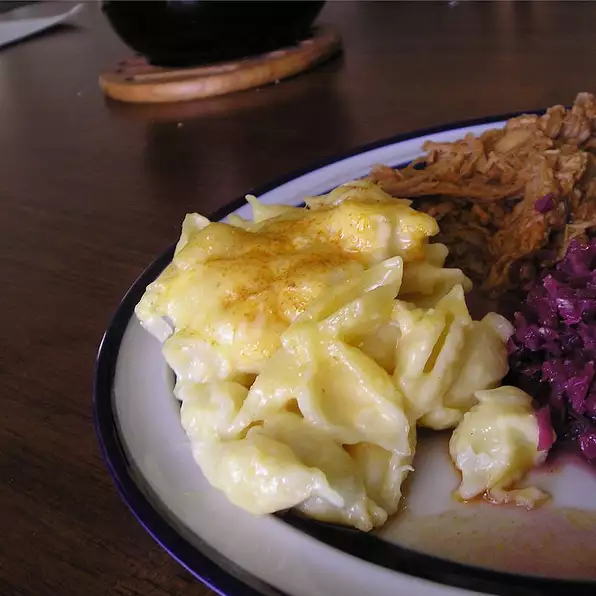

Mac and cheese

Description
Mac and cheese is a classic at home favorite.
But did you know you don't have to settle for boring
old boxed mac and cheese? I'm here to tell you that
you can make your very own home made mac and cheese
with one easy and delicious recipe.
Ingredients
- Macaroni noodles
- Butter
- Milk
- Cheddar cheese
- Swiss cheese
- Salt
Steps
- Bring water to a boil
- Cook macaroni noodles
- Add salt to cooking noodles
- Strain noodles
- add milk, butter and cheese to pot
- cook on low heat until cheese is melted, adding milk as needed